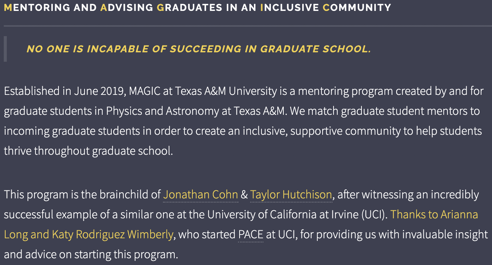

Mentorship & Teaching
Effective teaching and mentoring are vital skills for academics to develop, but astronomers in academia tend to receive very little formal education training unless they pursue it voluntarily. Therefore, gaining experience in these important skills is one of my most important career goals. Below, I discuss some of my experiences thus far.
Mentoring and Advising Graduates in an Inclusive Community (MAGIC)
Alongside Taylor Hutchison, I founded MAGIC, a program at Texas A&M that matches incoming astronomy graduate students to a network of current graduate student mentors, including one dedicated primary mentor for each incoming student.
We aim to build a supportive, inclusive, non-judgmental, and compassionate community for graduate students at Texas A&M. In this way, MAGIC provides a built-in community and support system for incoming graduate students.
In addition to monthly group meetings that serve to build a community and demystify graduate school for new students, mentors meet with their mentees every month. Through entry, mid-year, and exit polls, MAGIC shows significant improvement in students feeling both prepared for graduate school and certain that they belong in graduate school.
I served as MAGIC coordinator from 2019–2021, and I have been a MAGIC mentor from 2019–present.
Teaching Astronomy
From 2017-2018 I served as the Instructor of Record for ASTR 102: Observational Astronomy at Texas A&M. I taught two sections of this course per semester, meeting each section once weekly for 3 hours in the late evening at the Texas A&M teaching observatory. The observatory features a classroom and outdoor observation deck where you can observe using several 8-inch telescopes, as well as multiple observing domes.
Each class consists of a lecture followed by an indoor or outdoor laboratory activity. As the Instructor of Record, I was trusted with teaching students to use the 8-inch telescopes and developing and delivering lectures, indoor lab activities and outdoor observational labs, quizzes, and exams, with no direct faculty supervision. This unique opportunity drastically expanded my skill set and cemented my passion for teaching.
Peer-Led Team Learning (PLTL)
As an undergraduate at UT Dallas, I worked for three years as a PLTL leader for General Chemistry I and II. As a PLTL leader, I met weekly with two groups of students to help them work through challenging question packets created by the chemistry faculty. The central tenet of PLTL is the socratic method, focusing on helping students via asking leading questions to guide them to the correct answers, thus helping them develop a deeper understanding of the material.
This experience highlighted for me the importance of establishing clear communication and trust with students, creating an environment where everyone felt comfortable speaking up and asking questions.
In my last year, I was promoted to PLTL Super Leader. Serving ass Super Leader, I continued to meet with one group of students weekly while organizing the PLTL program, running PLTL Leader training sessions, and evaluating the performance of PLTL Leaders in the program.